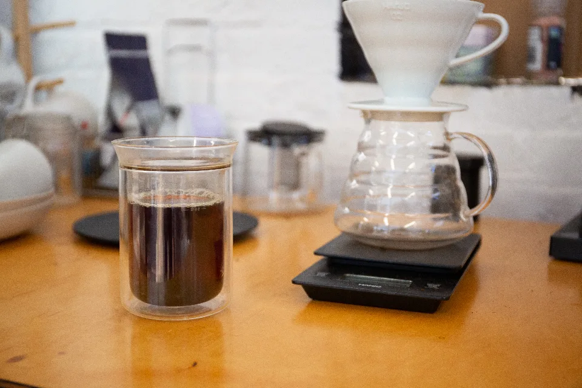
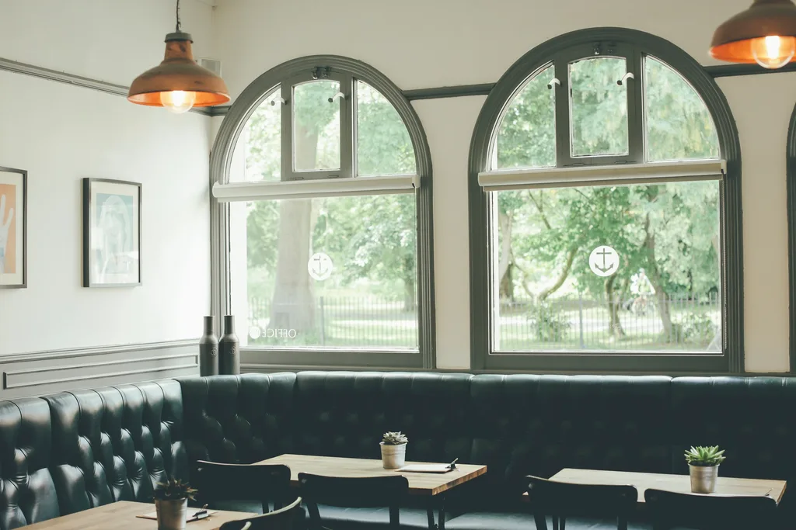
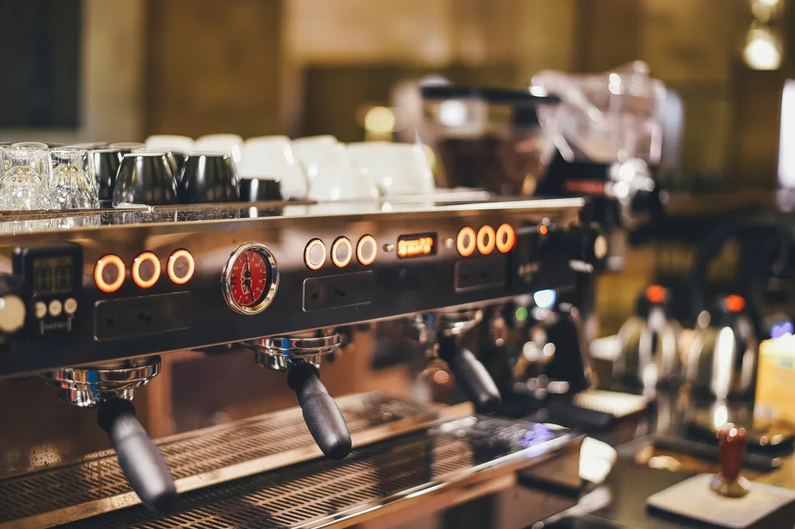
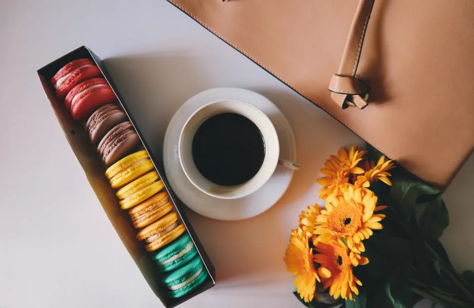
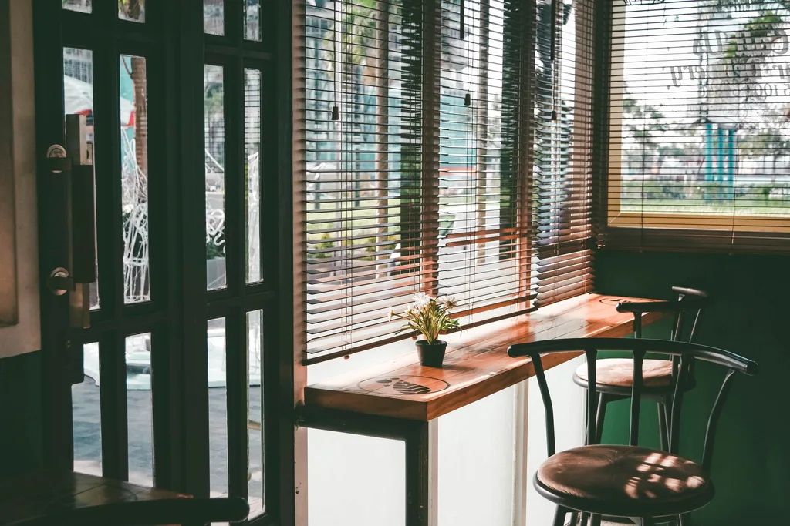
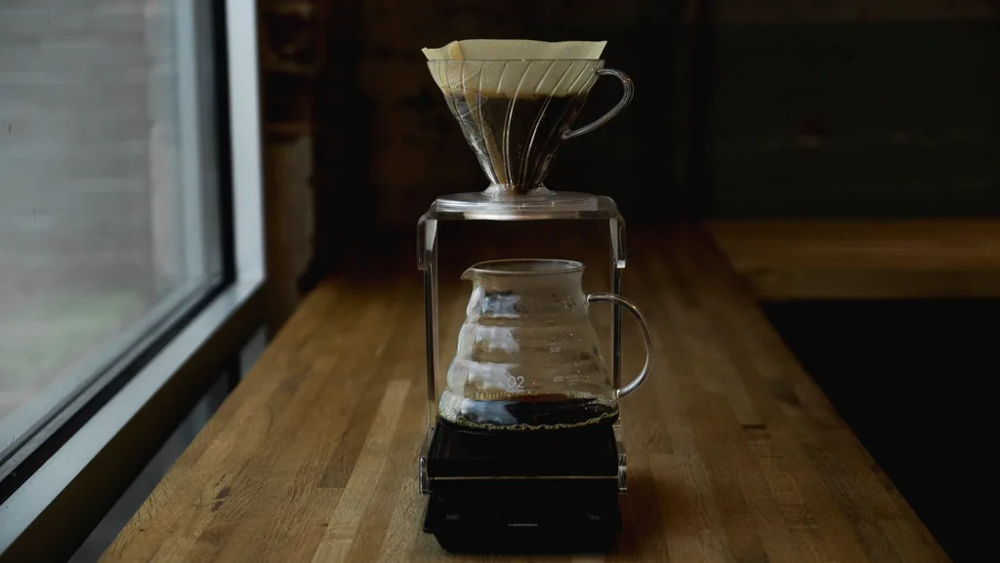
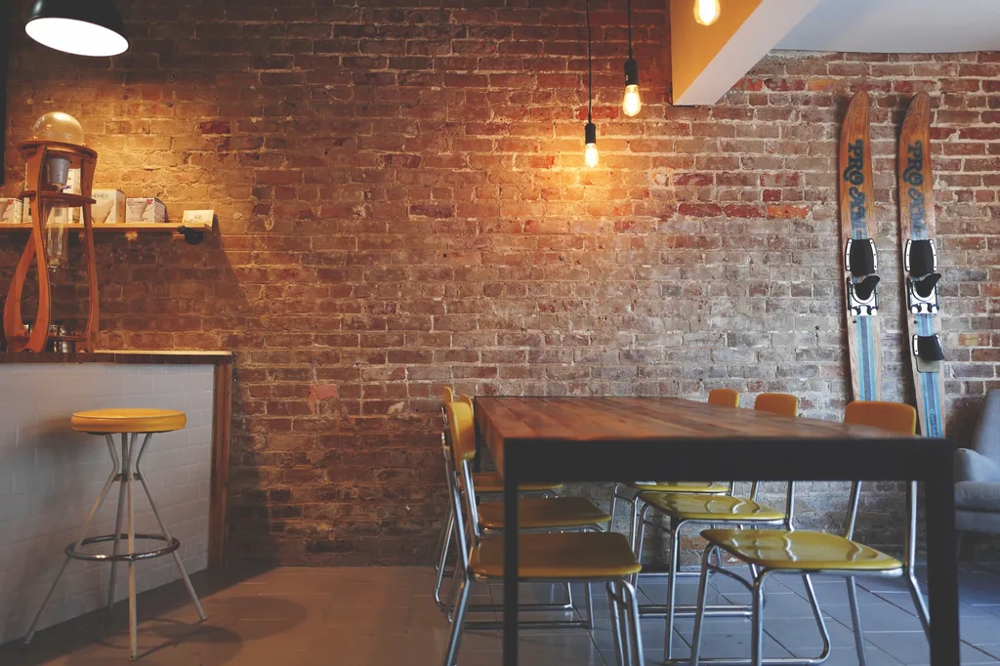
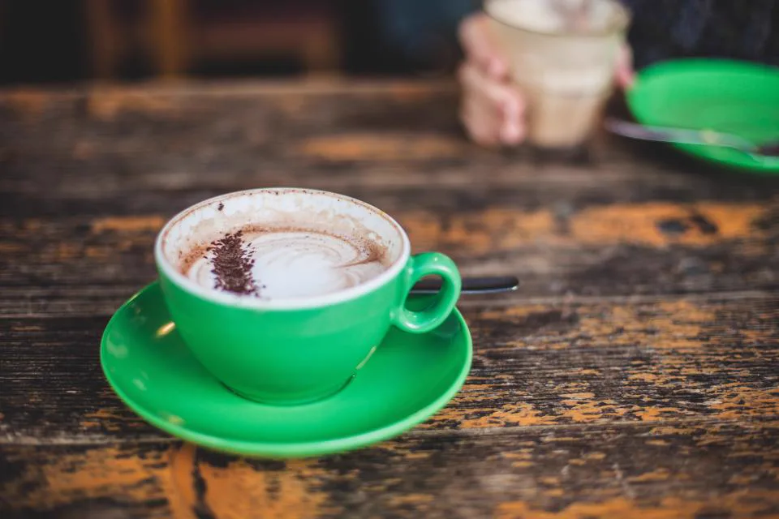

01一杯ずつ、手で淹れる
ご注文ごとにハンドドリップ。四分ほどお時間をいただきますが、その分おいしく。
一杯の、
ゆっくり。

Our way

01ご注文ごとにハンドドリップ。四分ほどお時間をいただきますが、その分おいしく。

02少量ずつ焙煎するので、豆はいつも一週間以内。今日いちばんおいしい産地は、スタッフにお尋ねください。

03ショートブレッド、季節のケーキ、マカロン。毎朝、店の小さな厨房で焼いています。
The room





News
Visit